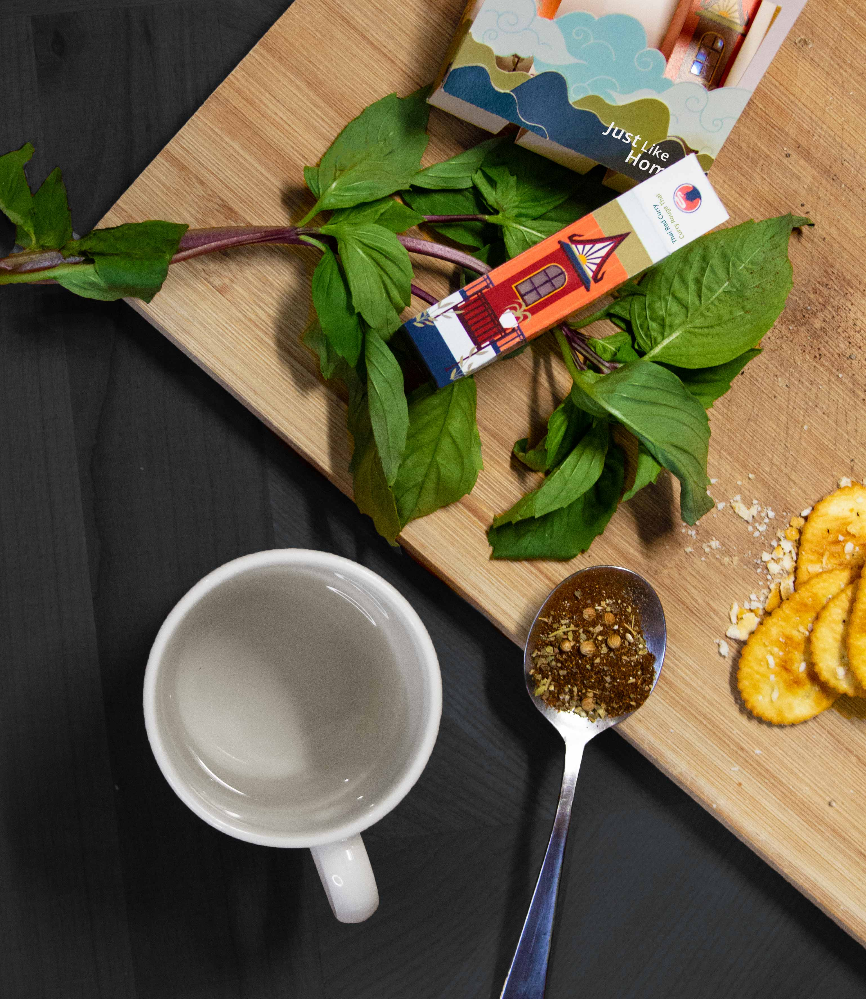

Challenge
Around the globe, freshly brewed soup is universally regarded as comfort food and is often
reminiscent of the familiar feeling of home. Contrarily, purchased for cooking convenience and
efficiency, instant soup does not carry the same associations as the original products.
Approach
While considering the consoling nature of soup, Just Like Home soup had been created to introduce
young adults with busy schedules to a few of the many vibrant flavours across the world. The visual
designs reflect historically significant buildings within the flavour’s respective country,
indicating that “home” can be anywhere—as it is a feeling, rather than a geographical location.